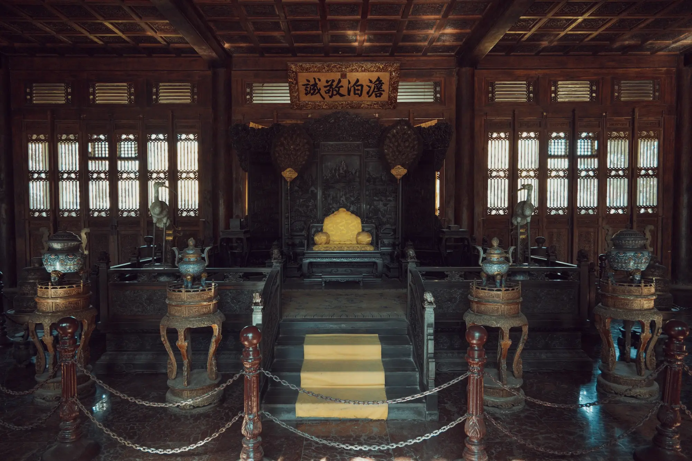
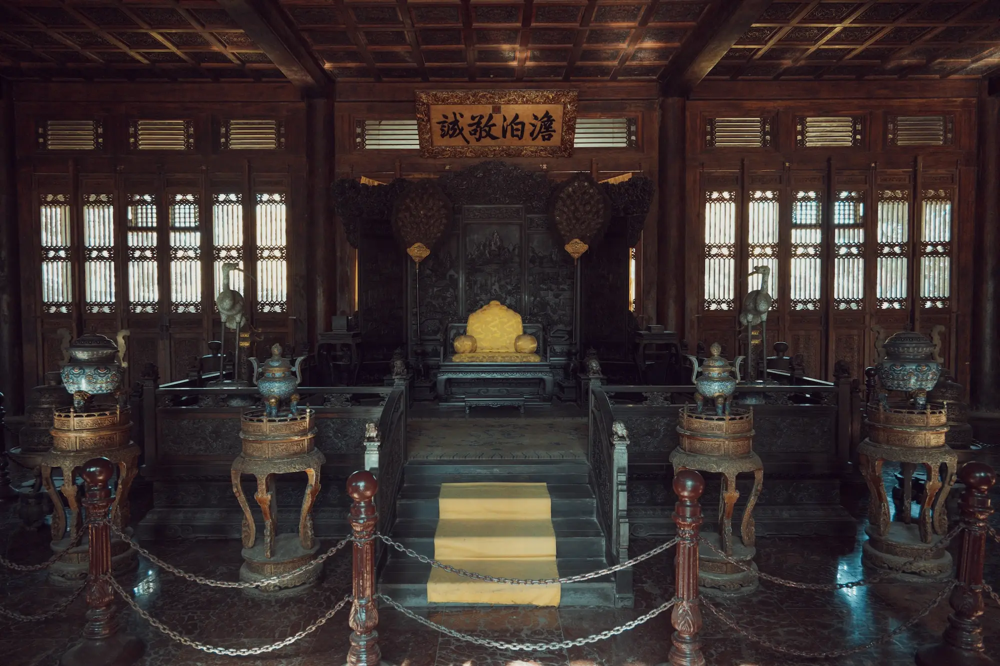

承德避暑山庄
 

历史沿革
避暑山庄（Chengde Mountain Resort），又名“承德离宫”或“热河行宫”，位于河北省承德市双桥区山庄东路6号。承德避暑山庄 [13-14]是中国清朝皇帝为了实现安抚、团结中国边疆少数民族，巩固国家统一的政治目的而修建的一座夏宫。占地564万平方米，是世界现存最大皇家园林。 避暑山庄始建于1703年（康熙四十二年），经康熙、雍正、乾隆三朝，历时89年于1792年建成。
建筑成就
主要分为宫殿区和苑景区（湖泊区、平原区和山峦区）两部分。避暑山庄按中国地理形貌选址设计，以西北山区、东南湖区、北部平原区之地形地貌构成中国版图的缩影。山庄造园取法自然，不假雕饰，120余组建筑掩映于山水草木之间, 构成融南秀北雄于一体、集全国名胜于一园的壮美景观。在避暑山庄宫墙之外，有十二座皇家寺庙。包括普陀宗乘之庙、须弥福寿之庙、安远庙、普乐寺、溥仁寺、溥善寺、广安寺、殊像寺、罗汉堂、广缘寺、普宁寺、普佑寺。
核心特色
1961年3月4日，避暑山庄被中华人民共和国国务院公布为第一批全国重点文物保护单位。1994年12月，承德避暑山庄及其周围寺庙被联合国教科文组织列为世界文化遗产。2007年，承德避暑山庄及周围寺庙景区被评为国家AAAAA级旅游景区。